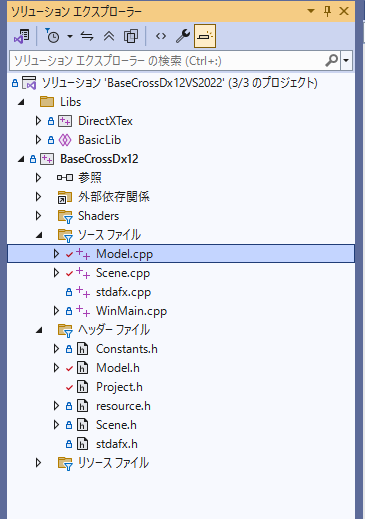

BaseCrossDx12ドキュメント
【Sample002】シングルモデルの描画
このサンプルはSamples/Sample002ディレクトリ内にあります。VisualStdioで該当ソリューション（VS2022でBaseCrossDx12VS2022.sln）を開いてください。ビルド後実行すると、以下の画面が現れます。Escキーを押すか×ボタンで終了します。Altを押しながらEnterで、全画面に変更できます。Windowモードに戻すときは、再びAltを押しながらEnterを押します。
このサンプルの構造
BaseCrossDx12でははじめにに述べたようにOpen Asset Import Library (assimp)を使ってモデルを読み込みます。サンプル化されているのはFBXフォーマットだけですが、他のフォーマットでも同様に読み込めます。
このサンプルでは、モデルの中でもシングルモデル（つまりFBXの中に一つのメッシュしかない）データの読み込み方法をサンプル化しています。
ソリューションエクスプローラを開くと以下のような構造が見られます。

モデルの読み込み（構築処理）
Scene::CreateAssetResources()関数では//モデルの作成 m_model = ObjectFactory::Create<Model>();という形でModelクラスのインスタンスを作成します。ObjectFactory::Create()関数では該当クラスのOnCreate()関数を呼び出しますのでModel.cppにあるModel::OnCreate()関数が構築処理になります。ソースは以下です。
void Model::OnCreate() {
ID3D12GraphicsCommandList* pCommandList = BaseScene::Get()->m_pTgtCommandList;
m_mesh = BaseMesh::CreateSingleBoneModelMesh(
pCommandList,
App::GetRelativeAssetsDir(), L"SeaLife_Rigged\\Green_Sea_Turtle_Maya_2018.fbx"
);
auto pBaseScene = BaseScene::Get();
auto& frameResources = pBaseScene->GetFrameResources();
auto pBaseDevice = BaseDevice::GetBaseDevice();
//ベイシックコンスタントバッファ作成
for (size_t i = 0; i < BaseDevice::FrameCount; i++) {
m_constantBufferIndex = frameResources[i]->AddBaseConstantBufferSet<BasicConstant>(pBaseDevice->GetD3D12Device());
}
//CPU側コンスタントバッファの作成
CreateConstantBuffer();
ComPtr<ID3D12PipelineState> defaultPipelineState
= PipelineStatePool::GetPipelineState(L"BcPNTBone");
if (!defaultPipelineState) {
//defaultPipelineStateが見つからなければ作成
//ラスタライザステート
CD3DX12_RASTERIZER_DESC rasterizerStateDesc(D3D12_DEFAULT);
//カリング（裏側は描画しない）
rasterizerStateDesc.CullMode = D3D12_CULL_MODE_BACK;
//パイプラインステートの定義
D3D12_GRAPHICS_PIPELINE_STATE_DESC psoDesc = {};
ZeroMemory(&psoDesc, sizeof(psoDesc));
//VertexPositionNormalTextureSkinningで作成
psoDesc.InputLayout = { VertexPositionNormalTextureSkinning::GetVertexElement(), VertexPositionNormalTextureSkinning::GetNumElements() };
//ルート認証はデフォルト
psoDesc.pRootSignature = RootSignaturePool::GetRootSignature(L"BaseCrossDefault").Get();
//頂点シェーダ
psoDesc.VS =
{
reinterpret_cast<UINT8*>(BcVSPNTBonePL::GetPtr()->GetShaderComPtr()->GetBufferPointer()),
BcVSPNTBonePL::GetPtr()->GetShaderComPtr()->GetBufferSize()
};
//ピクセルシェーダ
psoDesc.PS =
{
reinterpret_cast<UINT8*>(BcPSPNTPL::GetPtr()->GetShaderComPtr()->GetBufferPointer()),
BcPSPNTPL::GetPtr()->GetShaderComPtr()->GetBufferSize()
};
//ラスタライズステート
psoDesc.RasterizerState = rasterizerStateDesc;
//ブレンドステートは塗りつぶし
psoDesc.BlendState = BlendState::GetOpaqueBlend();
//デプスステンシルはデフォルト
psoDesc.DepthStencilState = CD3DX12_DEPTH_STENCIL_DESC(D3D12_DEFAULT);
psoDesc.DSVFormat = DXGI_FORMAT_D32_FLOAT;
psoDesc.SampleMask = UINT_MAX;
psoDesc.PrimitiveTopologyType = D3D12_PRIMITIVE_TOPOLOGY_TYPE_TRIANGLE;
psoDesc.NumRenderTargets = 1;
psoDesc.RTVFormats[0] = DXGI_FORMAT_R8G8B8A8_UNORM;
psoDesc.SampleDesc.Count = 1;
//デフォルト影無しのボーン描画
if (!defaultPipelineState) {
ThrowIfFailed(App::GetID3D12Device()->CreateGraphicsPipelineState(&psoDesc, IID_PPV_ARGS(&defaultPipelineState)));
NAME_D3D12_OBJECT(defaultPipelineState);
PipelineStatePool::AddPipelineState(L"BcPNTBone", defaultPipelineState);
}
}
}
ひとつづつ見ていきましょう。まず
ID3D12GraphicsCommandList* pCommandList = BaseScene::Get()->m_pTgtCommandList;で現在のコマンドリスト（構築用）を取得します。
続いて
m_mesh = BaseMesh::CreateSingleBoneModelMesh( pCommandList, App::GetRelativeAssetsDir(), L"SeaLife_Rigged\\Green_Sea_Turtle_Maya_2018.fbx" );1つのメッシュで構成されるボーンモデルSingleBoneModelMeshを読み込みます。
引数は最初のはコマンドリストでApp::GetRelativeAssetsDir()はアセットのディレクトリL"SeaLife_Rigged\\Green_Sea_Turtle_Maya_2018.fbx"はFBXファイル名です。
読み込みが成功すれば、m_meshにメッシュが代入されれます。 そのあとは、必要なリソースを取得してフレームごとのコンスタントバッファ及びCPU側コンスタントバッファを作成します。
auto pBaseScene = BaseScene::Get();
auto& frameResources = pBaseScene->GetFrameResources();
auto pBaseDevice = BaseDevice::GetBaseDevice();
//ベイシックコンスタントバッファ作成
for (size_t i = 0; i < BaseDevice::FrameCount; i++) {
m_constantBufferIndex = frameResources[i]->AddBaseConstantBufferSet<BasicConstant>(pBaseDevice->GetD3D12Device());
}
//CPU側コンスタントバッファの作成
CreateConstantBuffer();
ここで呼んでいるCreateConstantBuffer()関数は以下です。
void Model::CreateConstantBuffer() {
auto scene = dynamic_cast<Scene*>(BaseScene::Get());
auto& frameResources = scene->GetFrameResources();
auto pBaseDevice = BaseDevice::GetBaseDevice();
auto& viewport = scene->GetViewport();
std::shared_ptr<PerspecCamera> myCamera;
std::shared_ptr<LightSet> myLightSet;
//カメラとライト
myCamera = std::dynamic_pointer_cast<PerspecCamera>(scene->GetCamera());
myLightSet = scene->GetLightSet();
//パラメータの初期化
m_param.scale = Vec3(0.1f);
m_param.quaternion = Quat(Vec3(0, 1, 0), -XM_PI);
m_param.position = Vec3(0.0f, 0.0f, 0.0f);
//初期化
m_constantBuffer = {};
m_constantBuffer.activeFlg.y = 0;
//ライトは３つ
m_constantBuffer.activeFlg.x = 3;
//ワールド行列の設定
auto world = XMMatrixAffineTransformation(
m_param.scale,
Vec3(0),
m_param.quaternion,
m_param.position
);
auto view = (XMMATRIX)((Mat4x4)myCamera->GetViewMatrix());
auto proj = (XMMATRIX)((Mat4x4)myCamera->GetProjMatrix());
auto worldView = world * view;
m_constantBuffer.worldViewProj = Mat4x4(XMMatrixTranspose(XMMatrixMultiply(worldView, proj)));
m_constantBuffer.fogVector = Vec4(g_XMZero);
m_constantBuffer.fogColor = Vec4(g_XMZero);
//ライトの決定
for (int i = 0; i < myLightSet->GetNumLights(); i++) {
m_constantBuffer.lightDirection[i] = (Vec4)myLightSet->GetLight(i).m_directional;
m_constantBuffer.lightDiffuseColor[i] = (Vec4)myLightSet->GetLight(i).m_diffuseColor;
m_constantBuffer.lightSpecularColor[i] = (Vec4)myLightSet->GetLight(i).m_specularColor;
}
//ワールド行列
m_constantBuffer.world = Mat4x4(world);
m_constantBuffer.world.transpose();
XMMATRIX worldInverse = XMMatrixInverse(nullptr, world);
m_constantBuffer.worldInverseTranspose[0] = Vec4(worldInverse.r[0]);
m_constantBuffer.worldInverseTranspose[1] = Vec4(worldInverse.r[1]);
m_constantBuffer.worldInverseTranspose[2] = Vec4(worldInverse.r[2]);
XMMATRIX viewInverse = XMMatrixInverse(nullptr, view);
m_constantBuffer.eyePosition = Vec4(viewInverse.r[3]);
Col4 diffuse = Col4(1.0f);
Col4 alphaVector = (Col4)XMVectorReplicate(1.0f);
Col4 emissiveColor = Col4(0.0f);
Col4 ambientLightColor = (Col4)myLightSet->GetAmbient();
// emissive と ambientとライトをマージする
m_constantBuffer.emissiveColor = (emissiveColor + (ambientLightColor * diffuse)) * alphaVector;
m_constantBuffer.specularColorAndPower = Col4(0, 0, 0, 1);
// xyz = diffuse * alpha, w = alpha.
m_constantBuffer.diffuseColor = Col4(XMVectorSelect(alphaVector, diffuse * alphaVector, g_XMSelect1110));
auto mainLight = myLightSet->GetMainBaseLight();
Vec3 calcLightDir = Vec3(mainLight.m_directional) * Vec3(-1.0f);
Vec3 lightAt(myCamera->GetAt());
Vec3 lightEye(calcLightDir);
Vec4 LightEye4 = Vec4(lightEye, 1.0f);
m_constantBuffer.lightPos = LightEye4;
Vec4 eyePos4 = Vec4((Vec3)myCamera->GetEye(), 1.0f);
m_constantBuffer.eyePos = eyePos4;
XMMATRIX LightView, LightProj;
//ライトのビューと射影を計算
LightView = XMMatrixLookAtLH(
Vec3(lightEye),
Vec3(lightAt),
Vec3(0, 1.0f, 0)
);
LightProj = XMMatrixOrthographicLH(1024, 1024,
0.1f, 100);
m_constantBuffer.lightView = Mat4x4(XMMatrixTranspose(LightView));
m_constantBuffer.lightProjection = Mat4x4(XMMatrixTranspose(LightProj));
//ボーン
size_t BoneSz = m_BoneTransforms.size();
if (BoneSz > 0) {
UINT cb_count = 0;
for (size_t b = 0; b < BoneSz; b++) {
bsm::Mat4x4 mat = m_BoneTransforms[b];
// mat.transpose();
m_constantBuffer.Bones[cb_count] = ((XMMATRIX)mat).r[0];
m_constantBuffer.Bones[cb_count + 1] = ((XMMATRIX)mat).r[1];
m_constantBuffer.Bones[cb_count + 2] = ((XMMATRIX)mat).r[2];
cb_count += 3;
}
}
}
ずいぶん設定の多いコンスタントバッファと感じるでしょう。このサンプルのコンスタントバッファはBasicConstant型でBcで始まるシェーダで使用するものです。
以下はその宣言です。
//--------------------------------------------------------------------------------------
/// Basicシェーダー用コンスタントバッファ
//--------------------------------------------------------------------------------------
struct BasicConstant
{
Col4 diffuseColor;
Col4 emissiveColor;
Col4 specularColorAndPower;
Vec4 lightDirection[3];
Vec4 lightDiffuseColor[3];
Vec4 lightSpecularColor[3];
Vec4 eyePosition;
Col4 fogColor;
Vec4 fogVector;
Mat4x4 world;
Vec4 worldInverseTranspose[3];
Mat4x4 worldViewProj;
//汎用フラグ
XMUINT4 activeFlg;
//以下影
Vec4 lightPos;
Vec4 eyePos;
Mat4x4 lightView;
Mat4x4 lightProjection;
Vec4 Bones[3 * MAX_BONES];
};
MAX_BONESは200です。続いてパイプラインステートですが、前項のようにL"BcPNTBone"として登録されているパイプラインがなければ、作成するという構図になります。
ComPtr<ID3D12PipelineState> defaultPipelineState
= PipelineStatePool::GetPipelineState(L"BcPNTBone");
if (!defaultPipelineState) {
//defaultPipelineStateが見つからなければ作成
}
まず、ラスタライザですが
//ラスタライザステート CD3DX12_RASTERIZER_DESC rasterizerStateDesc(D3D12_DEFAULT); //カリング（裏側は描画しない） rasterizerStateDesc.CullMode = D3D12_CULL_MODE_BACK;とします。内側は描画しなくていいですね。
続いてパイプラインを用意して、ルート認証を設定します。
//パイプラインステートの定義
D3D12_GRAPHICS_PIPELINE_STATE_DESC psoDesc = {};
ZeroMemory(&psoDesc, sizeof(psoDesc));
//VertexPositionNormalTextureSkinningで作成
psoDesc.InputLayout = { VertexPositionNormalTextureSkinning::GetVertexElement(), VertexPositionNormalTextureSkinning::GetNumElements() };
//ルート認証はデフォルト
psoDesc.pRootSignature = RootSignaturePool::GetRootSignature(L"BaseCrossDefault").Get();
そのあとシェーダですが、Model.hに
DECLARE_DX12SHADER(BcVSPNTBonePL) DECLARE_DX12SHADER(BcPSPNTPL)という記述があり、Model.cppに
IMPLEMENT_DX12SHADER(BcVSPNTBonePL, App::GetShadersDir() + L"BcVSPNTBonePL.cso") IMPLEMENT_DX12SHADER(BcPSPNTPL, App::GetShadersDir() + L"BcPSPNTPL.cso")という記述があります。これは頂点シェーダはL"BcVSPNTBonePL.cso"を読み込んでBcVSPNTBonePLという名前（実際にはクラス名）、ピクセルシェーダはL"BcPSPNTPL.cso"を読み込んで、BcPSPNTPLという名前（クラス名）に指定します。
ですので
//頂点シェーダ
psoDesc.VS =
{
reinterpret_cast<UINT8*>(BcVSPNTBonePL::GetPtr()->GetShaderComPtr()->GetBufferPointer()),
BcVSPNTBonePL::GetPtr()->GetShaderComPtr()->GetBufferSize()
};
//ピクセルシェーダ
psoDesc.PS =
{
reinterpret_cast<UINT8*>(BcPSPNTPL::GetPtr()->GetShaderComPtr()->GetBufferPointer()),
BcPSPNTPL::GetPtr()->GetShaderComPtr()->GetBufferSize()
};
のような記述で、頂点シェーダ、ピクセルシェーダの情報をパイプラインに設定できます。残りの設定は、
//ラスタライズステート psoDesc.RasterizerState = rasterizerStateDesc; //ブレンドステートは塗りつぶし psoDesc.BlendState = BlendState::GetOpaqueBlend(); //デプスステンシルはデフォルト psoDesc.DepthStencilState = CD3DX12_DEPTH_STENCIL_DESC(D3D12_DEFAULT); psoDesc.DSVFormat = DXGI_FORMAT_D32_FLOAT; psoDesc.SampleMask = UINT_MAX; psoDesc.PrimitiveTopologyType = D3D12_PRIMITIVE_TOPOLOGY_TYPE_TRIANGLE; psoDesc.NumRenderTargets = 1; psoDesc.RTVFormats[0] = DXGI_FORMAT_R8G8B8A8_UNORM; psoDesc.SampleDesc.Count = 1;のようにし、最後に
//デフォルト影無しのボーン描画
if (!defaultPipelineState) {
ThrowIfFailed(App::GetID3D12Device()->CreateGraphicsPipelineState(&psoDesc, IID_PPV_ARGS(&defaultPipelineState)));
NAME_D3D12_OBJECT(defaultPipelineState);
PipelineStatePool::AddPipelineState(L"BcPNTBone", defaultPipelineState);
}
と、L"BcPNTBone"という名前で判別可能なパイプラインを登録することができます。
モデルの更新
モデルの更新は、まず、シーン側での
void Scene::Update(double elapsedTime) {
m_model->OnUpdate(elapsedTime);
UpdateConstantBuffers();
CommitConstantBuffers();
}
void Scene::UpdateConstantBuffers() {
m_model->OnUpdateConstantBuffers();
}
void Scene::CommitConstantBuffers() {
m_model->OnCommitConstantBuffers();
}
から始まります。Scene::Update()関数にはdouble elapsedTimeが渡されますので、そのままモデルの
m_model->OnUpdate(elapsedTime);と呼び出します。モデル側では
void Model::OnUpdate(double elapsedTime) {
m_totalTime += elapsedTime;
if (m_totalTime >= 2.0) {
//2秒間のアニメーションなので2秒を超えたら0にする
m_totalTime = 0.0;
}
UpdateAnimation(m_totalTime);
}
となります。m_totalTimeにelapsedTimeを加え、2秒になったら0にするという処理をしています。その後、ボーンアニメーション処理ですがUpdateAnimation()関数で行います。実装は以下です。
void Model::UpdateAnimation(double animeTime) {
//BaseAssimpの取り出し
auto ptrBaseAssimp = m_mesh->GetBaseAssimp();
m_BoneTransforms.clear();
//m_BoneTransformsにアニメーション情報の行列を代入
ptrBaseAssimp->GetBoneTransforms((float)animeTime, m_BoneTransforms);
}
コメントにあるように、BaseAssimpを取り出しm_BoneTransforms変数（ボーン情報が入る変数）に展開します。それで、m_model->OnUpdateConstantBuffers()ではm_BoneTransformsをコンスタントバッファンコピーします。
void Model::OnUpdateConstantBuffers() {
//ボーンの更新
size_t BoneSz = m_BoneTransforms.size();
if (BoneSz > 0) {
UINT cb_count = 0;
for (size_t b = 0; b < BoneSz; b++) {
bsm::Mat4x4 mat = m_BoneTransforms[b];
m_constantBuffer.Bones[cb_count] = ((XMMATRIX)mat).r[0];
m_constantBuffer.Bones[cb_count + 1] = ((XMMATRIX)mat).r[1];
m_constantBuffer.Bones[cb_count + 2] = ((XMMATRIX)mat).r[2];
cb_count += 3;
}
}
}
このように、ボーンの数だけコンスタントバッファのボーン領域にコピーします。m_model->OnCommitConstantBuffers()関数ではその情報を該当するフレームにコピーします。
void Model::OnCommitConstantBuffers() {
auto scene = dynamic_cast<Scene*>(BaseScene::Get());
auto pCurrentFrameResource = scene->GetCurrentFrameResource();
//コンスタントバッファのコピー
memcpy(pCurrentFrameResource->m_baseConstantBufferSetVec[m_constantBufferIndex].m_pBaseConstantBufferWO,
&m_constantBuffer, sizeof(m_constantBuffer));
}
モデルの描画
モデルの描画は、Scene::ScenePass()関数から始まります。
void Scene::ScenePass(ID3D12GraphicsCommandList* pCommandList)
{
//ViewportsとScissorRectsの設定
auto& viewport = GetViewport();
auto& scissorRect = GetScissorRect();
pCommandList->RSSetViewports(1, &viewport);
pCommandList->RSSetScissorRects(1, &scissorRect);
//RootSignatureの設定
auto rootSignature = RootSignaturePool::GetRootSignature(L"BaseCrossDefault", true);
pCommandList->SetGraphicsRootSignature(rootSignature.Get());
//RenderTargetsの設定
auto depthDsvs = GetDepthDsvs();
pCommandList->OMSetRenderTargets(1, &GetCurrentBackBufferRtvCpuHandle(), FALSE, &depthDsvs[SceneEnums::DepthGenPass::Scene]);
m_model->ScenePass(pCommandList);
}
このようにviewport、scissorRect、rootSignatureを設定しレンダーターゲットを設定します。その後m_model->ScenePass()関数を呼び出します。その内容は以下です。
void Model::ScenePass(ID3D12GraphicsCommandList* pCommandList)
{
auto pBaseScene = BaseScene::Get();
auto pCurrentFrameResource = pBaseScene->GetCurrentFrameResource();
auto CbvSrvUavDescriptorHeap = pBaseScene->GetCbvSrvUavDescriptorHeap();
if (m_mesh) {
ComPtr<ID3D12PipelineState> defaultPipelineState
= PipelineStatePool::GetPipelineState(L"BcPNTBone", true);
//nullのハンドルを取得
CD3DX12_GPU_DESCRIPTOR_HANDLE cbvSrvGpuNullHandle(CbvSrvUavDescriptorHeap->GetGPUDescriptorHandleForHeapStart());
//L"t0"（シャドウテクスチャ）にnullを設定
pCommandList->SetGraphicsRootDescriptorTable(pBaseScene->GetGpuSlotID(L"t0"), cbvSrvGpuNullHandle);
//パイプラインステートの設定
pCommandList->SetPipelineState(defaultPipelineState.Get());
//サンプラー1
UINT index = pBaseScene->GetSamplerIndex(L"LinearClamp");
if (index == UINT_MAX) {
throw BaseException(
L"LinearClampサンプラーが特定できません。",
L"Model::ScenePass()"
);
}
//サンプラー1のハンドルを作成
CD3DX12_GPU_DESCRIPTOR_HANDLE samplerHandle1(
pBaseScene->GetSamplerDescriptorHeap()->GetGPUDescriptorHandleForHeapStart(),
index,
pBaseScene->GetSamplerDescriptorHandleIncrementSize()
);
//L"s0"にサンプラー1のハンドルを設定
pCommandList->SetGraphicsRootDescriptorTable(pBaseScene->GetGpuSlotID(L"s0"), samplerHandle1);
//サンプラー2
index = pBaseScene->GetSamplerIndex(L"ComparisonLinear");
if (index == UINT_MAX) {
throw BaseException(
L"ComparisonLinearサンプラーが特定できません。",
L"SModel::ScenePass()"
);
}
//サンプラー2のハンドルを作成
CD3DX12_GPU_DESCRIPTOR_HANDLE samplerHandle2(
pBaseScene->GetSamplerDescriptorHeap()->GetGPUDescriptorHandleForHeapStart(),
index,
pBaseScene->GetSamplerDescriptorHandleIncrementSize()
);
//L"s1"にサンプラー2のハンドルを設定
pCommandList->SetGraphicsRootDescriptorTable(pBaseScene->GetGpuSlotID(L"s1"), samplerHandle2);
//シェーダリソース（テクスチャ）のハンドルの設定(null)
CD3DX12_GPU_DESCRIPTOR_HANDLE srvNullHandle(
pBaseScene->GetCbvSrvUavDescriptorHeap()->GetGPUDescriptorHandleForHeapStart()
);
//テクスチャは使わないのでL"t1"にnullを設定
pCommandList->SetGraphicsRootDescriptorTable(pBaseScene->GetGpuSlotID(L"t1"), srvNullHandle);
//コンスタントバッファビュー
//L"b0"に現在のフレームのコンスタントバッファを設定
pCommandList->SetGraphicsRootConstantBufferView(pBaseScene->GetGpuSlotID(L"b0"),
pCurrentFrameResource->m_baseConstantBufferSetVec[m_constantBufferIndex].m_baseConstantBuffer->GetGPUVirtualAddress());
//描画
pCommandList->IASetPrimitiveTopology(D3D_PRIMITIVE_TOPOLOGY_TRIANGLELIST);
pCommandList->IASetVertexBuffers(0, 1, &m_mesh->GetVertexBufferView());
pCommandList->IASetIndexBuffer(&m_mesh->GetIndexBufferView());
pCommandList->DrawIndexedInstanced(m_mesh->GetNumIndices(), 1, 0, 0, 0);
}
}
複雑に見えますが、各シェーダのスロットにどういうオブジェクトを入れるかが分かれば比較的簡単です。シャドウマップは使わないのでnull、テクスチャは使わないのでnullを入れサンプラー1（L"s0"スロット）にはL"LinearClamp"を設定し、サンプラー2（L"s1"スロット）にはL"ComparisonLinear"を設定します。
最後にL"b0"スロット（コンスタントバッファ）に該当フレームのコンスタントバッファを設定し、
//描画 pCommandList->IASetPrimitiveTopology(D3D_PRIMITIVE_TOPOLOGY_TRIANGLELIST); pCommandList->IASetVertexBuffers(0, 1, &m_mesh->GetVertexBufferView()); pCommandList->IASetIndexBuffer(&m_mesh->GetIndexBufferView()); pCommandList->DrawIndexedInstanced(m_mesh->GetNumIndices(), 1, 0, 0, 0);と描画します。ここで行うパラメータ設定は、もっぱらシェーダーへの入力です。BcVSPNTBonePL.hlsl（頂点シェーダ）とBcPSPNTPL.hlsl（ピクセルシェーダ）が必要とするデータをスロットという形で設定してます。
もっと単純なシェーダ、前項で紹介したSpで始まるシェーダや、簡単なシェーダーを自作した場合は、スロットの数も少ないでしょうから、単純化することは可能です。
まとめ
このサンプルではボーンモデルの描画を紹介しました。しかし実際にはテクスチャの設定や影の設定などもっと設定すべく項目があります。そちらのサンプルは後述します。まずここではボーンモデルのメカニズムを知っていただければと思います。